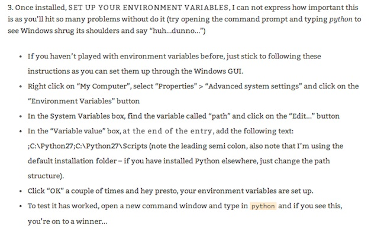

Open Project Management
06 February 2014
1. Mac Setup
2. Windows Setup
1. Mac Setup
Setup #01: Xcode
- Install Xcode
- Install Command Line Tools for Xcode
Setup #02: Homebrew
- Install Homebrew:
ruby -e "$(curl -fsSL https://raw.github.com/Homebrew/homebrew/go/install)"
brew doctor
brew update
Setup #03: Homebrew
- Fix path:
vim ~/.bash_profile
- Add this and save:
# Set architecture flags
export ARCHFLAGS="-arch x86_64"
# Ensure user-installed binaries take precedence
export PATH=/usr/local/bin:$PATH
# Load .bashrc if it exists
test -f ~/.bashrc && source ~/.bashrc
- Execute:
. ~/.bash_profile
Source: http://hackercodex.com/guide/mac-osx-mavericks-10.9-configuration/
Setup #03: Python
- Install Python:
brew install python
which python
easy_install pip
Setup #04: Python libraries
- Install Python libraries:
pip install numpy
brew install gfortran
pip install scipy
Setup #05: Python libraries
- Install Python libraries:
brew install freetype
brew install libpng
brew link freetype
pip install git+https://github.com/matplotlib/matplotlib.git#egg=matplotlib-dev
pip install networkx
Source: http://penandpants.com/2012/02/24/install-python/ - http://stackoverflow.com/questions/12910126/errors-installing-matplotlib-clang
Setup #06: Java + Gephi
- For Mavericks: Install this Java update: JavaForOSX2013-05.dmg
- Install Gephi and open it: is everything ok?
- Still problems with Gephi? Check this and this
2. Windows Setup
Setup #01: Python
- Install Python 2.7.6
Source: http://adesquared.wordpress.com/2013/07/07/setting-up-python-and-easy_install-on-windows-7/
Setup #02: Python: Path
Source: http://adesquared.wordpress.com/2013/07/07/setting-up-python-and-easy_install-on-windows-7/
Setup #03: Python Easy_install + Pip
- Install easy_install:
python ez_setup.py install
- Install pip:
easy_install pip
Any problem with pip? Check this
Source: http://adesquared.wordpress.com/2013/07/07/setting-up-python-and-easy_install-on-windows-7/
Setup #04: Python libraries
- Install Python libraries:
pip install numpy
pip install scipy
- Install matplotlib
pip install networkx
Setup #05: Java + Gephi
Thank you!
Massimo Menichinelli / info@openp2pdesign.org / @openp2pdesign

This work is licensed under a Creative Commons Attribution 3.0 Unported License.
Massimo Menichinelli - 2013
openp2pdesign.org